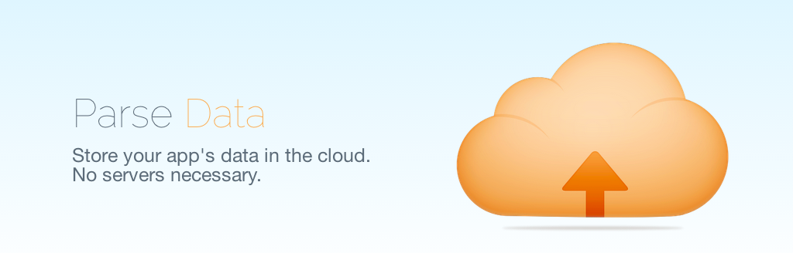

Server side/ Backend service for mobile apps
ဘာကြောင့် backend သုံးသင့်သလဲ ? ဘယ်သူတွေ Parse ကို သုံးသင့့်သလဲ ?

Mobile App ကို definition ဖွင့်ကြည့်လျှင် သူ့ရဲ့ နာမည်အတိုင်း mobile ဖြစ်ဖို့ဦးတည်ရေးကြရပါတယ်။ အတတ်နိုင်ဆုံး System resource သုံးတာကိုနည်းအောင် ရေးကြပါတယ်။ App တွေရဲ့ category ကိုအကြမ်းဖျင်းခွဲကြည့်ရင် ၅ မျိုးလောက်တွေ့နိုင်ပါတယ်။ယင်းတို့မှာ
Game တွေအတွက်ကတော့ online game စစ်စစ်တွေထက် mixture ( offline + online ) တွေပိုများပါတယ်။ Offline မှာဆော့ပြီး online ရတဲ့အခါ icloud မှာ data save တာတို့ ၊ Game Center မှာ score အတွက်ပြင်ဆင်တာတို့ရှိပါတယ်။ အဲဒါတွေအတွက် apple မှာ အသင့်ခေါ်သုံးလို့ရတဲ့ framework တွေရှိပါတယ်။ အဲ့တော့ backend service အတွက် စိတ်ပူစရာ မလိုပါဘူး။ ( apple အတွက်ပဲ သီးသန့်ရေးတဲ့ app များအတွက်သာဖြစ်ပါတယ်။ Cross platform ဆိုရင်တော့ တခြားဟာ သုံးရတော့မှာပါ။)
နောက်တစ်ခုကတော့ standalone app လို့ပြောလို့ရတဲ့ app များဖြစ်ပါတယ်။ သူတို့ကို internet ဘယ်တော့မှ မရလည်း သုံးလို့ရအောင် ရေးထားပါတယ်။ ဥပမာ Myanmar calendar app နဲ့ Myanmar First Aid HD app တို့ဖြစ်ပါတယ်။ Standalone App တွေကို ခြုံကြည့်မယ်ဆိုရင် light သိပ်မဖြစ်ပါဘူး။ ဒါပေမယ့် powerful ဖြစ်တယ်လို့ပြောလို့ရပါတယ်။ ရှိတဲ့ Resource, content အကုန်လုံးကို app နဲ့အတူ ထည့်ပေးလိုက်ရပါတယ်။ တစ်ခါတစ်လေကျတော့ အဲလို အကုန်ထည့်ပေးလိုက်တဲ့အခါ Paid App တွေအတွက် ဒုက္ခ ရောက်ပါတယ်။ Content အကုန်ပါနေတော့ crack ခံလိုက်ရရင် ရှိသမျှအကုန် သူများယူသုံးလို့ရနိုင်ပါတယ်။ အဲလိုမျိုးအစား Content ကိုအကုန်မထည့်ဘဲ နောက်မှ user လိုတဲ့အခါ၊ ၀ယ်လိုတဲ့အခါ Content တွေ download နိုင်အောင် server side ရေးသင့်ပါတယ်။ Authenticated user တွေမှ download နိုင်အောင် ရေးထားလို့ရပါတယ်။ Crack ကို ကာကွယ်နိုင်တာတော့ မဟုတ်ပါဘူး။ ဒါပေမယ့် crack လုပ်မယ့်သူတွေ အလုပ်တစ်ဆင့် ရှုပ်သွားစေမှာပါ။ App developer တွေဘက်က ပြန်ကြည့်မယ် ဆိုရင်လည်း content update လုပ်တာ လွယ်ကူသွားမှာပါ။
တတိယအမျိုးအစားကတော့ newsstand app တွေဖြစ်ပါတယ်။ ယခုဖတ်နေတဲ့ NSMag ဆိုရင် Newsstand app အမျိုးအစားပါ။ အဲလို app တွေက light ဖြစ်ပါတယ်။ နောက်မှလိုသလို content တွေ download နိုင်၊ delete နို်င်ပါတယ်။ Offline မှာလည်း ဖတ်လို့ရအောင် ပြင်ဆင်ထားပါတယ်။ ယင်းတို့အတွက် server side ကျိန်းသေလိုပါတယ်။ App ပေါ်မှုတည်ပြီး server side မှာပြင်ဆင်ထားရမယ့် feature တွေကွာသွားပါမယ်။ ဥပမာ magazine အသစ်ထွက်တဲ့အခါ user တွေကို အသိပေးလိုတာ, emergency news တွေ ( မုန်တိုင်း၀င်ခါနီး သတင်းကြိုပို့တာ) ကို အသိပေးလိုတဲ့အခါ notification ပို့လို့ရအောင် APNS ( Apple Push Notification Service) ကို server side မှာရေးထားရပါမယ်။
လေးခုမြောက်အမျိုးအစားကတော့ Client Side App လို့ပြောလို့ရတဲ့ App တွေပါ။ ဒီ type ကတော့ နည်းနည်း ရူပ်ထွေးပါတယ်။ ဥပမာ gtalk app လိုမျိူးရေးချင်ရင် google ကနေ API တွေခေါ်သုံးလို့ရပါတယ်။ Server side အတွက်ရေးစရာမလိုတဲ့အခါရှိသလို လိုတဲ့အခါလည်းရှိပါတယ်။ စောစောက gtalk app အတွက် ဆိုရင် app ထဲမှာ ရှိနေမှသာ chat နေနိုင်မှာဖြစ်ပါတယ်။ အပြင်ထွက်လိုက်ရင် ဟိုဘက်ကဘာပို့လိုက်လည်းဆိုတာ ရတော့မှာမဟုတ်ပါဘူး။ ထိုအခါ APNS ကိုသုံးဖို့ လိုလာပြန်ပါတယ်။
နောက်ဆုံးတစ်ခုကတော့ ၀န်ဆောင်မှုပေးမယ့် App တွေပါ။ User တွေတစ်ယောက်ဆီက document /content ကိုနောက်တစ်ယောက်ကို share နိုင်တဲ့ app, ဒါမှမဟုတ် Myanmar currency ကြည့်လို့ရတဲ့ app kcurrency တို့လိုရေးလိုတဲ့အခါ server side ကိုကိုင်ရပါတော့မယ်။ ၀န်ဆောင်မှုပေးတယ်ဆိုတဲ့အတိုင်း ရှိတဲ့ resource တွေကို ကိုယ်ကိုယ်တိုင် ကိုင်တွယ်ရပါတော့မယ်။ အချိန်နဲ့အမျှ content တွေပြောင်းလဲနိုင်တဲ့အတွက် server side လိုလာပါတယ်။

အထက်ပါ ကိစ္စတွေကြောင့် server side ကိုသုံးသင့်တဲ့ အခြေအနေမျိုးတွေ ကြုံလာရနိုင်ပါတယ်။ Standalone app မျိုးတွေအတွက်ဆိုရင်တောင် Notification system လေးပါရင် ပိုစိတ်၀င်စားနိုင်တဲ့ feature တွေပြုလုပ်နိုင်ပါတယ်။ ဘယ်ကနေ စကြမလဲဆိုတာ စဉ်းစားရပါတော့မယ်။ ထိုအခါ သင်က ဘယ်လိုင်းကနေ mobile developer ဖြစ်လာလဲဆိုတာ အရင်စဉ်းစားကြည့်ပါ။ Web ဘက်တွေရေးဖို့ အားသန်လား။ ဒီapp content က secure ဖြစ်ဖို့လိုလား ။ ဒီapp အတွက် အချိန် ဘယ်လောက် ပေးနိုင်မလဲ။ အချိန်ဘယ်လောက်ရနိုင်မလဲ သိဖို့လိုပါတယ်။ ကိုယ်ကိုယ်တိုင် Business ကြီးကြီး ၊ service ကောင်းကောင်းနဲ့ ရေရှည်လုပ်ဖို့ စဉ်းစားထားရင်တော့ server side ကို ကိုယ်ကိုယ်တိုင် (သို့မဟုတ်) ရေးနိုင်တဲ့သူကို ရှာဖို့လိုပါတယ်။ ကိုယ်ကိုယ်တိုင် server ရေးတဲ့အတွက် ကောင်းကွက် တစ်ချို့နဲ့ ဆိုးကွက်တစ်ချို့ ရှိပါတယ်။
ယင်းတို့မှာ
ကိုယ်ပိုင် backend server ရဲ့ ကောင်းကွက်များ
ကိုယ်ပိုင် backend server ရဲ့ဆိုးကွက်များ
အထက်မှာဖော်ပြထားတဲ့အတိုင်း ကိုယ်ပိုင် backend ဆောက်သင့်မသင့်စဉ်းစားရပါမယ်။ အကယ် ၍ သင်က server ဘက်အတွက် သေချာမရေးနိုင်ဘူး ၊ အချိန်မပေးနိုင်ဘူး ၊ သူများငှားဖို့အတွက်လည်း မလုပ်နိုင်ဘူး ၊ မလုပ်ချင်ဘူး ၊ mobile developer စစ်စစ်တစ်ယောက် သင့် data တွေက သင့် control အောက်မှာမရှိလည်း အဆင်ပြေတယ်။ သင့် content size တွေကလည်း အရမ်းမကြီးဘူးဆိုရင် သူများဆောက်ပြီးသား backend တွေခေါ်သုံးသင့်ပါတယ်။ အဲလိုခေါ်သုံးရင် server side အတွက် ရေးဖို့မလိုသလို mobile app ဘက်မှာလည်း သူတို့ server ကို ချိတ်ဖို့အတွက် framework တွေကို အသင့်ခေါ်သုံးနိုင်တဲ့အတွက် developing time ကို သိသိသာသာ လျှော့ချနိုင်ပါတယ်။ ကောင်းကွက် ဆိုးကွက်တွေကိုတော့အောက်တွင် ဖော်ပြထားပါတယ် ။
Ready-made backend server ကောင်းကွက်များ
Ready-made backend server ရဲ့ဆိုးကွက်များ
ဒါဆို ဘယ်အချိန်မှာ ready-made server သုံးသင့်လဲ ? သင်လိုချင်တဲ့ feature တွေချရေးကြည့်ပါ။ ပြီးတော့ သူတို့ဘာပေးနိုင်လဲကြည့်ပါ။ ထပ်တူကြဖို့တော့ မဖြစ်နိုင်ပါ။ သို့သော် ကိုယ့် program structure ကိုနဲနဲပြောင်းကြည့်ရင် feature ကိုအနီးစပ်ဆုံး ဖြစ်အောင်လုပ်နိုင်ပါမယ်။ ထို့နောက် သင့် feature တွေက သူတို့ free ပေးနိုင်တဲ့ feature တွေဖြစ်မဖြစ်ကြည့်ပါ။ ဟုတ်ခဲ့ရင်တော့ good to go ပါပဲ။ မဟုတ်ခဲ့လျှင်တော့ သင်တတ်နိုင် မတတ်နိုင် ကြည့်ရပါတော့မယ်။ သင် server အတွက် စိတ်ရှုပ်လည်း မခံနိုင်ဘူး။ သင် ဒါ အတွက် ရင်းနှီးလိုက်တာထက် သင်ပိုရနိုင်မယ်ဆိုရင် သုံးသင့်ပါတယ်။ များသောအားဖြင့် advance feature တွေကို သတ်မှတ်ထားတဲ့ ကာလတစ်ခုအထိ free သုံးလို့ရပါတယ်။ ယင်းအချိန်ကာလ အတွင်းမှာ သင်တစ်ကယ်လိုမလို စဉ်းစားနိုင်မှာပါ။
ဒီ article အတွက်တော့ ready-made server အတွက် Parse Dataအကြောင်းကိုပဲ ဖော်ပြသွားပါမယ်။

Parse Data က server side အတွက် ခေါင်းရှုပ်မခံချင်တဲ့ mobile developer တွေအတွက်ဆိုရင် သင့်တော်ပါတယ်။ သုံးရတာ လွယ်တယ်။ ရိုးရှင်းတယ်။ အချိန်မကုန်ဘူး။ tutorial ကောင်းကောင်းရှိတယ်။ မသိတာမေးဖို့အတွက် active ဖြစ်နေတဲ့ community ရှိတယ်။ IOS တင်မကဘဲ Android, Window စသဖြင့် အစုံအစုံကို support ပေးပါတယ်။ သူတို့ရဲ့ basic feature က သာမန် mobile developer တစ်ယောက်လိုနိုင်တာထက် ပိုပေးထားပါတယ်(ဥပမာ API request က တစ်လကိုတစ်သန်းရပါမယ်။ ။ )။ ချွင်းချက်လေးတွေတော့ ရှိပါတယ်။ ဥပမာ upload file size ကို 20MB မှာ limit ထားတာ။ File storage က 1GB ပဲရတာ စသဖြင့်ပါ။ Pro feature ကို ၀ယ်မယ်ဆိုရင် တစ်လကို 199$ ကျပါမယ်။

Parse ကို သုံးဖို့ဘယ်က စရမလဲ။ ပထမဆုံး www.parse.com ကိုသွားပြီး register လုပ်ပါ။ ထို့နောက် new app ကို create ပါ။ https://parse.com/apps/new . ထိုအခါ သင့်ရဲ့ App ထဲတွင် သုံးရမယ့် key တွေရလာပါလိမ့်မယ်။ အသေးစိတ်ကို https://parse.com/apps/quickstart တွင် ဖတ်နိုင်ပါတယ်။ သေချာ ရှင်းလင်းထားပါတယ်။ သင် tutorial တွေ ကြည့်ချင်ရင် https://parse.com/tutorials တွင်ကြည့်နိုင်ပါတယ်။ source code တွေလည်းပေးထားပါတယ်။ အဲဒီ source code ထဲက app key ကို သင့်ရဲ့ app key နဲ့ပြောင်းလိုက်ရုံနဲ့ သင် run လို့ရပါပြီ။
Parse ကို သုံးဖို့ဘယ်က စရမလဲ။ သင့် App အပေါ်မူတည်ပြီး database ဆောက်နိုင်ပါတယ်။ program တစ်ကြောင်းရေးစရာမလိုဘဲ သူ့ UI ကနေ လုပ်နိုင်ပါတယ်။ Notification ပို့ချင်ရင်လည်း သူ့ textbox မှာ စာရေးပြီး send နှိပ်လိုက်တာနဲ့ ပို့လို့ရပါပြီ။ ( mobile app ဘက်မှာတော့ သူ့ tutorial ထဲကအတိုင်း notification ရဖို့ပြင်ဆင်ပေးထားရပါမယ်။)

အကျဉ်းချုပ်အားဖြင့် ပြောရလျှင် Parse သုံးရတာလွယ်ကူပါတယ်။ stand-alone app တွေကိုလည်း Parse နဲ့တွဲလိုက်ရင် ပိုစိတ်၀င်စားနိုင်စရာ feature တွေလုပ်နိုင်ပါလိမ့်မယ်။ stand-alone app တွေအတွက်လည်း content များများကို server side မှာမလိုလောက်တဲ့အတွက် အဆင်ပြေပါလိမ့်မယ်။ notification system လုပ်ရတာလည်း လွယ်ကူပါတယ်။ စမ်းသုံးကြည့်ပါ။